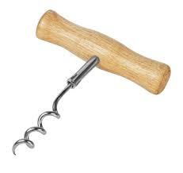
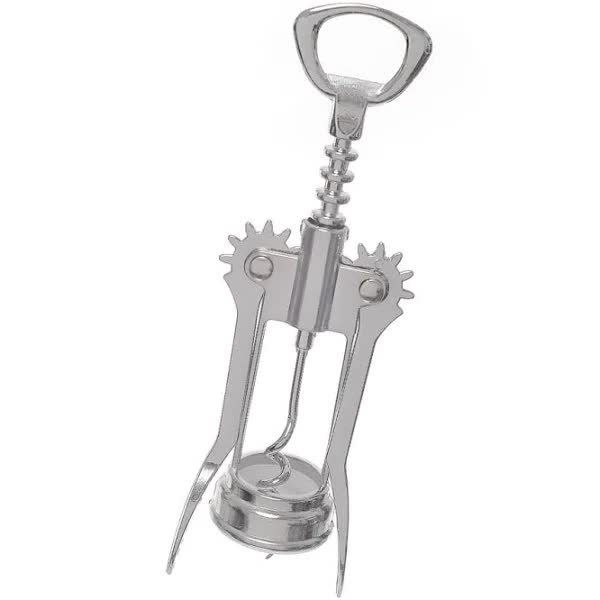
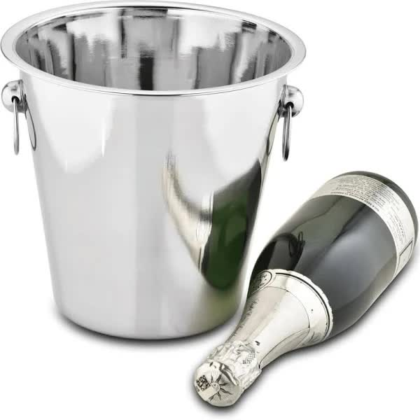
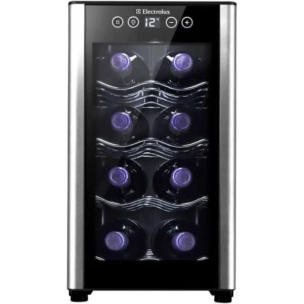

Mercearia
Saca Rolhas simples de madeira
R$10.00
Saca rolhas simples feito de madeira para abrir garrafas de vinho, feito com madeira selecionada de qualidade
Saca Rolhas inox premium
R$12.00
Saca rolhas premium feito de inox para garantir uma abertura de rolhas mais facil e com confiabilidade e resistencia
Balde refrigerador de inox
R$52.72
Balde refrigerador de inox para refrigerar vinhos e espumantes de sua escolha
Frigobar para vinhos
R$699.99
Frigobar para vinho eletrolux e bivolt, perfeita para pequenos espaços